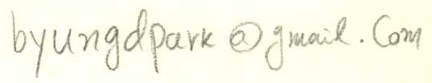

Calculus with Analytic Geometry 3
MATH 250 Section 02 [2660], Spring 2016
Mondays and Wednesdays 5:35PM - 7:25PM, Room: HW406
CUNY Hunter College
Instructor: Byungdo Park Email: 
Office Hours: By appointment.
Syllabus: PDF
Announcements
2016-06-01: Letter grades has been submitted. Have a wonderful summer!
2016-06-01: A solution to the Final Exam has been posted below.
2016-05-18: Take-home final exam begins tonight 7:35pm. Due date: May 25th, 5:20pm. Late submissions will not be accepted.
2016-05-10: Take-home midterm exam will be given on May 18th. About a week of time will be given. If you are going to take the oral exam, please sign-up by submitting the coversheet by May 18th end of class.
2016-05-10: A review sheet on chapters 4, 5, and 6 has been posted below.
2016-05-10: Homework #14 and Homework #15 have been posted below.
2016-05-04: Homework #13 has been posted below.
2016-04-29: Midterm exam solution has been posted below.
2016-04-25: Homework #12 has been posted below.
2016-04-25: We do not meet on April 25th and 27th. Happy spring recess to all. We meet on Monday, May 2nd.
2016-04-20: Final exam will be also a take-home/oral exam. Note that the class will meet on Wednesday May 25th, 5:20-7:20 pm. Note different time. If we can cover all the materials in the syllabus by the 18th, I will give an introduction to Morse theory.
2016-04-18: There was a typo in Problem #4 in the take-home exam. Please see the corrected version below.
2016-04-13: Homework #11 has been posted below.
2016-04-13: Take-home midterm exam begins tonight 7:35pm. Due date: April 20th, 5:35pm. Late submissions will not be accepted.
2016-04-11: Here is a calculation I initially tried in the my example of the Bordered Hessian Test. This way or the one I eventually used in class gives the same conclusion. Click here.
2016-04-06: Homework #10 has been posted below. Take-home midterm exam will be given on April 13th. About a week of time will be given.
2016-04-05: A midterm exam review sheet on chapter 3 has been posted.
2016-03-30: Midterm Exam Announcement has been posted below in Exam Schedules section.
2016-03-30: Homework #9 has been posted below.
2016-03-28: A corrigendum to the Review Problems on Chapters 1 and 2 as well as a corrected version are posted below. For those who missed today's lecture, I wrote up a complete solution to Problem 5 (1) and a sketch to 5. (2). Many thanks to Dariusz and Samrin for pointing out errors and asking questions about Problem 5.
2016-03-21: Homework #8 has been posted below. Please also find from below a midterm exam review sheet on chapters 1 and 2.
2016-03-16: Next Wednesday the 23th is CUNY Friday. After coming Monday the 21st, we meet on the 28th. I will bring a review problem set on Monday and post it below.
2016-03-14: Check out Homework #7 below.
2016-03-14: Here is a corrigendum to an example of a differentiable function whose derivative is not continuous. Click here.
2016-03-09: Check out Homework #6 below.
2016-03-02: Please see an advertisement on CUNY GC MathFest below.
2016-03-02: Check out Homework #5 below. Here is an answer to the limit question from today's class: Click here.
2016-02-24: More problems are posted for Homework #4. I will provide a sample exam in prior to the midterm exam. You will have ideas about what to focus.
2016-02-22: Check out Homework #4 below. More problems will be posted on Wednesday the 24th.
2016-02-17: Check out Homework #3 below. Suggested problems are not required. I will try to do one of them in class.
2016-02-10: Check out Homework #2 posted again.
2016-02-08: Check out Homework #2 below.
2016-02-08: There will be no class on Monday, February 15th (President's day).
2016-02-06: Check out CUNY Math Challenge Flyer.
2016-01-27: There will be a student ambassador from the Dolciani Mathematics Learning Center sometime in the beginning of the semester, and introduce about the center for about five minutes. Please welcome him/her and have interest.
2016-01-27: Check out Homework #1 below.
2016-01-27: Welcome!
Homework
Problems are taken from end-of-section exercises.
Homework #1 10 problems Due Date: Feb. 8th
Section 1.1. Exercises 15, 17, 20, 21, 27
Section 1.2. Exercises 10, 15, 20, 27, 28
Homework #2 13 problems Due Date: Feb. 17th
Section 1.5. Exercises 2, 9, 11, 15, 16, 17, 18, 19
Section 1.3. Exercises 3, 7, 13, 23, 45
Homework #3 12 problems Due Date: Feb. 24th
Section 1.3. Exercises 15, 16, 19, 21, 29, 39, 43
Section 1.4. Exercises 1, 6 (a) (d), 9, 11, 15 (Suggestion: 12, 13)
Homework #4 16 problems Due Date: Mar. 2nd
Section 2.1. Exercises 7(a), [13, 15, 17 Describe two level sets for each. Don't have to do all.], 19, 22, 23, 25, 31, 33, 36, 38, 40
Section 2.2. Exercises 19, 25
Homework #5 15 problems Due Date: Mar. 9th
Section 2.2. Exercises 6, 8 (Solution to (b)), 9, 10, 11, 12, 16, 33
Section 2.3. Exercises 1, 2, [3 (b) (e)], 5, 7, [9 (b), (c)], 14
Homework #6 14 problems Due Date: Mar. 16th
Section 2.3. Exercises 4, 19, 22 (Suggestions: 27, 28 No need to hand-in)
Section 2.4. Exercises 7, 9, 17, 19, 21
Section 2.5. Exercises 5, 6, 7, 8, 9, 11
Homework #7 12 problems Due Date: Mar. 28th
Section 2.5. Exercises 27, 30, 31, 35, 36
Section 2.6. Exercises 2, 5, 8, 10, 12, 21, 23
Homework #8 7 problems Due Date: Mar. 30th
Section 3.1. Exercises 1, 4, 12, 17, 26, 31, 32
Homework #9 7 problems Due Date: Apr. 6th
Section 3.2. Exercises 2, 6, 7, 8, 9, 10, 11
Homework #10 10 problems Due Date: Apr. 13th
Section 3.3. Exercises 3, 6, 11, 15, 18, 20, 22, 28, 29, 31 (Solution)
Homework #11 20 problems Due Date: May 2nd
Section 3.4. Exercises 1, 2, 3, 5, 6, 11, 12, 13, 14, 17, 22, 23, 28, 31, 32, 33
Section 3.5. Exercises 1, 2, 6, 15
Homework #12 14 problems Due Date: May 4th
Section 4.1. Exercises 10, 19, 20, 23, 24
Section 4.2. Exercises 1, 2, 11
Section 5.1. Exercises 1, 2, 3, 4, 5, 6
Homework #13 12 problems Due Date: May 11th
Section 5.2. Exercises 1, 3, 4, 5, 7, 9, 17
Section 5.3. Exercises 4 (a), (c), (d), (f), 5, 8, 10, 12
Homework #14 14 problems Due Date: May 18th
Section 5.4. Exercises 3, 5, 7, 9, 11, 13
Section 5.5. Exercises 3, 7, 8, 11, 17, 23, 25, 27
Homework #15 30 suggested problems. Will not be collected.
Section 6.1. Exercises 12, 13, 14, 15, 16, 17
Section 6.2. Exercises 1, 4, 7, 15, 19, 21, 22, 23, 24, 25, 26
Section 6.3. Exercises 1, 3, 5, 9, 11, 16, 18
Section 6.4. Exercises 1, 4, 5, 7, 8, 11
Exam Schedules
The midterm will be either a take-home exam or an oral exam. (Your choice.) Please read midterm exam policies. The take-home exam will be distributed and posted here on the date of the lesson that finishes Chapter 3.
The midterm exam will cover Chapter 1 to Chapter 3. (Section 3.5. optional this time.)
Review Problems from Chapters 1 and 2 (Corrected version).
A Corrigendum to Review Problems from Chapters 1 and 2.
A solution to 1.
A solution to 5 (1) and a sketch for 5. (2).
A solution to 9.
Review Problems from Chapter 3
Review Problems from Chapters 4, 5, 6
Take-Home Midterm Exam Cover Sheet, Problem sheet (corrected version), Solution.
The average was 67 and multiple students have got a score 100.
The final exam will be a take-home/oral exam (your choice), and will cover the entire material we cover until the end of May 18th class. More information will be posted later. Please read Final exam policies. The take-home exam will be distributed and posted here on Wednesday May 18th.
Take-Home Final Exam Cover Sheet, Problem sheet, Solution.
The average was 76.48 and the maximum score achieved by a student was 100.
Tutoring information
If you need an assistance from departmental tutoring, please visit the Dolciani Mathematics Learning Center.
Advertisements
The CUNY Math Challenge is open for all matriculated CUNY undergraduate students. If you are interested, please see this PDF.
On Friday the 25th of March, there will be a math event at the CUNY Graduate Center. The math department chair Prof. Ara Basmajian writes: "On Friday March 25 (a CUNY holiday) we are hosting GC Mathfest 2016- this event is open to all undergraduate and Masters level students. ... Snacks and Lunch will be provided. The schedule and registration pages can be found at our website..." The link for schedule and registration is here. Please plan to attend if you are interested, and especially if you are considering doctoral study in mathematics somewhere in the future. This event will be a nice cultural investment for you. If you have any question about this event, please contact Ms. Maria-Helena Reis through mreis@gc.cuny.edu Here is a flyer.
Suggestions on courses to take after Math 250
I wrote up a document about this, but will not post it on the webpage. I would like it to have it as a personal communication than an official announcement. If you are interested in hearing my suggestions at your own risk, please email me. I will send you a PDF file.
Links
Webpage of Byungdo Park
Hunter College Math Department Homepage